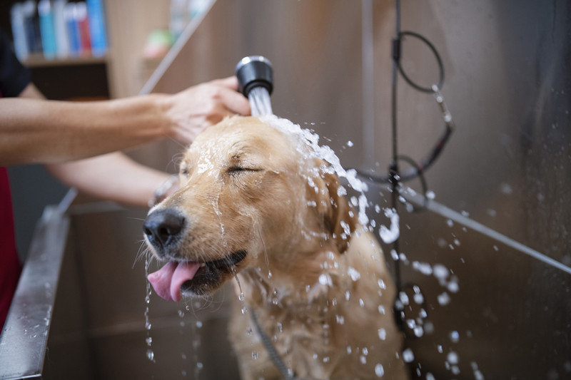
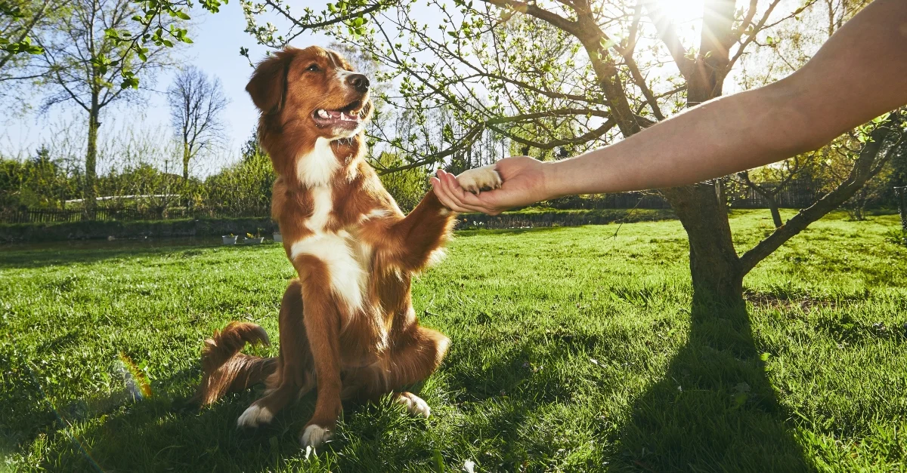

Dog Care Guide

Taking care of a dog requires love, patience, and responsibility. Here are some essential tips for keeping your dog healthy and happy :

- Provide Proper Nutrition : Feed your dog a balanced diet suitable for its age, size, and activity level. Always ensure fresh, clean water is available.
- Exercise : Dogs need daily exercise to stay fit and mentally stimulated. Activities such as walking, running, and playing fetch help keep them healthy.
- Grooming : Brush your dog's coat regularly, trim its nails when needed, and keep its ears and teeth clean to prevent health problems.
- Veterinary Care : Schedule regular check-ups and vaccinations with a veterinarian. Early detection of health issues can help your dog live a longer life.
- Training and Socialization : basic commands and allow your dog to interact with people and other dogs. This helps improve behavior and confidence.
- Love and Attention : Dogs are social animals that thrive on companionship. Spend quality time with your dog and provide a safe, loving environment. By following these simple guidelines, you can help ensure your dog lives a happy, healthy, and fulfilling life.


